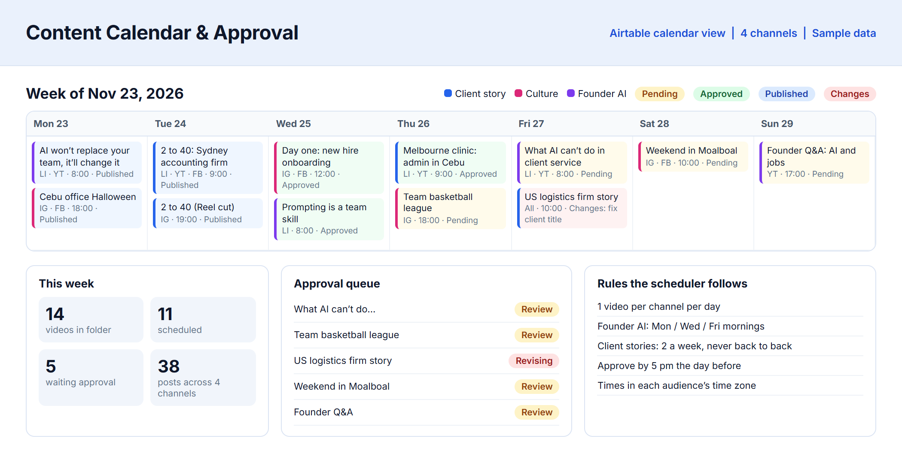
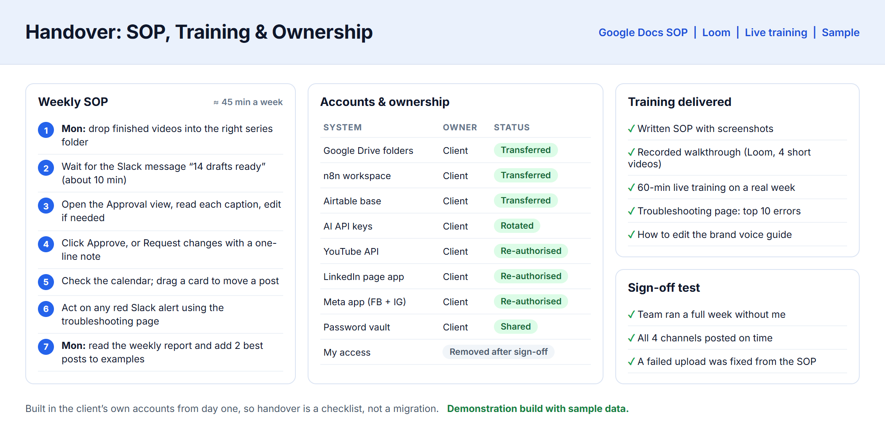

Architecture: intake, AI copy with a human approval step, then scheduling, publishing and reporting.
Architecture: intake, AI copy with a human approval step, then scheduling, publishing and reporting. One video, four platform-ready drafts, each scored against the brand voice before review.
One video, four platform-ready drafts, each scored against the brand voice before review.
Content calendar with the approval queue and the rules the scheduler follows.
Handover: weekly SOP, account ownership checklist, training and the sign-off test.The challenge
A growing offshoring company planned to publish a steady stream of finished videos in three series: client stories, culture content, and AI thought leadership from the founder. Each video needed a different title, caption, description and hashtags for LinkedIn, YouTube, Facebook and Instagram, and each platform has its own format rules. Doing this by hand meant about 40 minutes per video, copy that sounded different depending on who wrote it, and no single view of what was going out when.
They wanted AI to do the heavy lifting, but with two firm rules: the copy must sound like them, not like generic AI, and nothing goes live until a person approves it. After the build, their own team had to run it every week without a developer.
The solution
I built the workflow in n8n with Airtable as the team’s content calendar. Editors drop finished videos into a shared Google Drive folder. The system checks each file, transcribes it, and has Claude write the copy for all four platforms using a brand voice pack built from the company’s best past posts. A second AI pass scores every caption against the voice checklist and rewrites weak ones. A reviewer approves, edits or sends back each item from one screen, and approved posts are scheduled and published through each platform’s official API.
How it works
- Drop the videoEditors save finished videos into one Google Drive folder per series. The folder tells the system which series and voice to use.
- Check the filen8n picks up new files and checks length, aspect ratio and size against each platform’s limits, and flags a missing vertical cut for Instagram.
- TranscribeOpenAI Whisper turns speech into a timestamped transcript. Client and speaker names are pulled out for the reviewer to confirm, so names and titles are never guessed.
- Write in the brand voiceClaude gets the transcript plus the voice pack: the voice guide, about 25 approved past posts for that series, a banned-phrase list and the rules for each platform. It returns structured JSON with a LinkedIn post, YouTube title, description, chapters and tags, a Facebook post and an Instagram caption with hashtags.
- Voice checkA second pass scores each draft from 1 to 10 against the voice checklist, and simple rules catch banned phrases, emoji limits and caption length. Anything under 8 is rewritten before a person sees it.
- ApproveThe reviewer gets a Slack message and opens the approval view in Airtable. They can edit, approve, or request changes with a one-line note that the AI uses to revise.
- Schedule and publishApproved items get a slot from the calendar rules and are published through the YouTube Data API, the LinkedIn API and the Meta Graph API for Facebook and Instagram Reels. Live links are saved back to the calendar.
- ReportViews, watch time and engagement come back daily. A Looker Studio report and a short AI summary every Monday show which series and topics work best.
Making AI captions sound like the brand, not generic
- A written voice guide built with the team: tone, words they use, words they never use, and examples of good and bad posts
- Few-shot examples: 20 to 30 of their best real posts per series go into every prompt, so the AI copies their style instead of a generic one
- The transcript leads: captions quote what clients and the founder actually said, which is the most on-brand material there is
- A separate voice for each series: client stories are proud and specific, culture is warm and casual, founder posts are direct and opinionated
- A banned-phrase list (“game-changer”, “unlock”, “in today’s fast-paced world”) checked by code, not only by the AI
- An AI voice score on every draft, with automatic rewrites below 8/10
- Every reviewer edit is saved, and the best approved posts are added to the examples each week, so the voice gets closer over time
Content calendar and approval
- One Airtable calendar for all channels, colour-coded by series and status
- Status flow: Draft → Pending approval → Approved → Scheduled → Published, or Changes requested
- Rules: one video per channel per day, founder posts on Monday, Wednesday and Friday mornings, client stories never back to back
- Drag a card to move a post; the scheduled time updates automatically
- Nothing is published without an approval, and who approved it and when is saved on the record
Handover and ownership
- Built in the client’s own accounts from day one: Google Drive, n8n, Airtable, AI API keys and every platform app
- A written SOP with screenshots for the weekly routine, plus a troubleshooting page for the 10 most likely errors
- A recorded walkthrough in four short Loom videos
- A 60-minute live training session using a real week of videos
- All logins in the client’s password vault, API keys rotated and platform connections re-authorised under their admin
- Sign-off test: the team ran a full week without me before my access was removed
Reliability
- Failed uploads retry three times, then alert the team in Slack with the reason and the fix from the SOP
- Platform tokens are refreshed automatically, with a warning before any connection expires
- Every step is logged on the video’s record, so it’s easy to see where something stopped
Results
- Copy for four platforms ready about 10 minutes after a video is dropped in the folder
- Manual work down from about 40 minutes per video to a 3-minute review
- A full week of videos handled in about 45 minutes
- 78% of drafts approved without edits by the third week
- One calendar that shows everything going out, on every channel
- The team owns and runs the whole system without a developer
Demonstration build with sample data.
Other projects

Supplier promotions become bilingual campaigns with branded visuals, human approval and scheduling.

An n8n agent that writes personalized recruiter emails, gets human approval in Slack and handles follow-ups.

Four AI agents draft a complete, cited RFP response in minutes, using OpenAI, Claude and Gemini for what each does best.